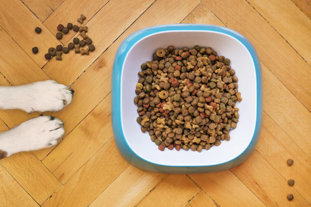
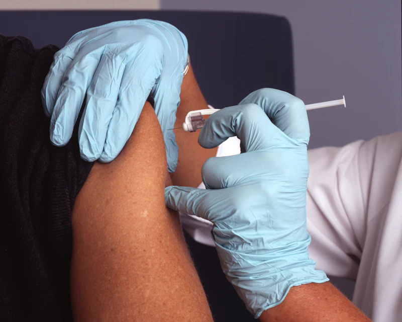
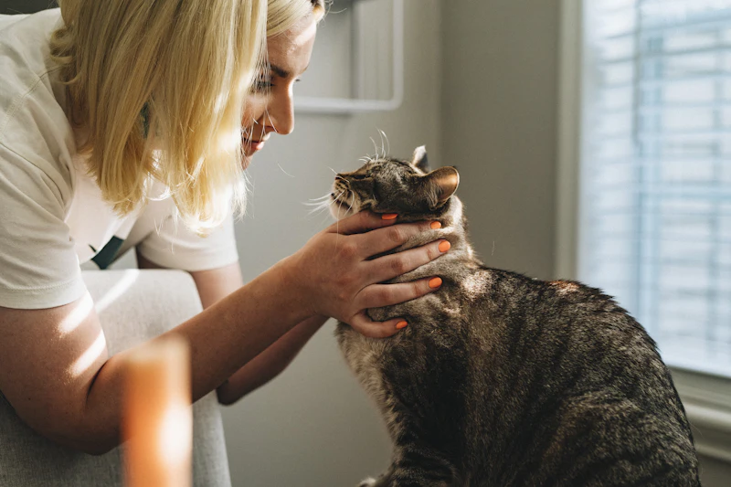

NutritionUnderstanding Pet Food Labels & Macro Balance
How to decipher guaranteed analysis percentages, moisture levels, and select wholesome ingredients for your dog or cat.
Read Full GuideAt PawCare, we pair advanced veterinary medicine with calm, low-stress care. From puppy and kitten milestones to gentle senior comfort, our team stands by your family.
Calm Feline & Canine Handling
Preventive Exams & Diagnostics

Founded with a commitment to evidence-based veterinary practice and heartfelt client communication, PawCare provides a soothing medical home for dogs and cats of every life stage.
We believe that veterinary medicine is most effective when pet parents and clinicians form a collaborative partnership built on mutual trust.

From routine nose-to-tail wellness exams to delicate soft-tissue procedures, our clinic provides well-rounded healthcare under one roof.
Thorough annual checkups, lifestyle risk assessments, weight monitoring, and age-tailored wellness screenings.
Core and lifestyle-based immunizations, heartworm testing, and customized year-round flea and tick protection.
Ultrasonic scaling, subgingival probing, dental digital radiography, and dental extractions when necessary.
Our fictional staff brings together veterinary medicine, surgical experience, and gentle patient handling.
Specializing in internal medicine and preventive geriatrics. Passionate about low-stress cat handling.
Fictional Demo ProfileExperienced in minimally invasive procedures, laparoscopic spays, and restorative joint care.
Fictional Demo ProfileFocusing on chronic allergy management, endocrine disorders, and point-of-care abdominal ultrasound.
Fictional Demo ProfileDedicated to stabilizing acute trauma, toxicology management, and post-operative pain protocols.
Fictional Demo ProfilePets age more rapidly than humans, meaning subtle physiological shifts can occur within months. Comprehensive biannual or annual exams reveal silent conditions early.
Vaccination plans are never one-size-fits-all. We evaluate your pet's lifestyle, travel habits, wildlife contact, and age to select necessary immunizations.
Rabies, Distemper, Adenovirus, Parvovirus, and Parainfluenza (DHPP). Non-core options include Bordetella, Lyme, and Leptospirosis.
Feline Viral Rhinotracheitis, Calicivirus, and Panleukopenia (FVRCP), along with Rabies. Feline Leukemia (FeLV) recommended for outdoor risk.
Year-round defense against heartworms, intestinal parasites (roundworms, hookworms), ticks, and fleas to protect pets and owners.
PawCare provides core in-house diagnostics alongside reference laboratory partnerships to assist clinicians in uncovering the underlying causes of pet illness.
Every procedure at PawCare follows rigorous anesthesia protocols, multi-parameter vital monitoring, and proactive pain management.
Whether performing standard spay and neuter procedures or delicate mass removals, our surgical team prioritizes safety at every checkpoint.
Hygienic grooming is an essential component of preventive dermatology. Our gentle groomers work in tandem with veterinary staff to address sensitive skin, matted coats, and ear hygiene.
Visiting the vet should never be stressful. Here is how we ensure you and your companion feel welcomed from the moment you step through our doors.
Submit your pet's details and preferred appointment window through our online inquiry interface.
Arrive at our clinic where our team offers high-value treats and guides you to species-separated waiting areas.
Your veterinarian conducts a low-stress physical examination while discussing diet, habits, and any owner observations.
You receive a clear wellness summary, medication guides if needed, and transparent follow-up recommendations.
Illustrative demo feedback showing what compassionate, transparent veterinary care feels like to families.
"My rescue dog Buster used to shake uncontrollably at the vet. The team at PawCare sat on the floor with peanut butter treats and took twenty minutes just to make him feel safe before touching him."
"When Luna developed chronic digestive issues, Dr. Jenkins explained every blood test and dietary option thoroughly without rushing us. Having such transparency meant everything to our family."
"The senior wellness program gave our 12-year-old labradoodle his pep back. The laser therapy and joint protocol have made our evening walks together comfortable again. Truly grateful."
Reliable, evidence-based pet wellness guidance written to help you care for your animals between clinic visits.

NutritionHow to decipher guaranteed analysis percentages, moisture levels, and select wholesome ingredients for your dog or cat.
Read Full GuideRecognizing early periodontal disease, gingivitis stages, and the systemic dangers of untreated dental bacteria.
Read Full GuideFrom lip licking to tail flicking: learning to read what your companion is communicating before anxiety escalates.
Read Full GuideAnswers to common questions regarding visits, appointments, clinic hours, and our care policies.